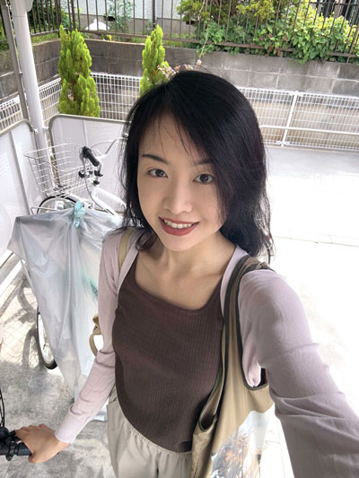

I keep looking at the same place. In winter, very little changes from one day to the next. At ten in the morning or two in the afternoon, the shadows of the branches fall in the same direction as they did yesterday and the day before. One bird chases another across my field of vision. The nearest branches sway gently, while the distant edge of the forest shimmers. To me, this inner space that holds such subtle changes, where ripples endlessly spread, is what life force is.
Someone who had just passed by returns. They sit down for a moment, resting, perhaps thinking about something. While I lose myself in the swaying branches, the drifting clouds, and the shifting light and shadow, that person quietly leaves. Before long, someone else arrives.
I paint the ripples of my mind as they are in the present moment. Sometimes I become aware that a particular feeling has grown especially strong. From then on, I return to it every day. With each brushstroke, the depth of that feeling becomes clearer and more complete.
To me, the language of the heart is abstract. As it constantly changes, the energy that rises from it fills me with vitality. Through my paintings, I hope to unfold my whole heart before the viewer, offering a place where one may enter and leave freely, encounter another with intimacy, and at the same time discover the energy within one's own heart.
